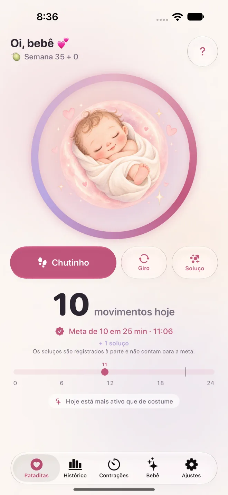

Pataditas / Contagem de movimentos do bebê
Contar os chutes do bebê: quando começar, o que é normal e quando procurar ajuda
Muitas gestantes se perguntam quantos chutes são normais, quando começar a contar e quando procurar ajuda. Aqui reunimos o que dizem o Ministério da Saúde, o Count the Kicks (EUA) e o NHS (Reino Unido) sobre os movimentos fetais, e mostramos onde concordam e onde não.
Resposta rápida
- Não existe um número de chutes normal para todos os bebês. O que importa é o padrão habitual do seu bebê e se ele muda.
- A Caderneta da Gestante (Ministério da Saúde, 2026) lista a diminuição ou ausência dos movimentos como sinal de alerta, especialmente se o bebê ficar mais de 4 horas sem se mexer após as 20 semanas.
- Os métodos de contagem variam: o Count the Kicks sugere medir todo dia quanto tempo leva para chegar a 10 movimentos a partir da 28ª semana; o NHS diz que não é preciso contar.
- Todas as fontes concordam: se os movimentos diminuírem, pararem ou mudarem, procure atendimento na hora.
Quantos chutes (movimentos fetais) são normais?
Não existe um número de chutes normal para todos os bebês. O NHS e o RCOG, do Reino Unido, dizem que não há um número fixo de movimentos por dia: o que importa é o padrão habitual do seu bebê e se ele diminui ou muda. A Caderneta da Gestante também não define um número; ela trata a diminuição dos movimentos como sinal de alerta.
Chegar a qualquer número não quer dizer que o bebê está bem. O sinal para procurar atendimento é a mudança: mexer menos que o habitual, mais fraco ou parar de mexer, tendo contado ou não.
O RCOG explica que os bebês têm períodos de sono de 20 a 40 minutos, raramente mais de 90, em que normalmente não se mexem, e que a tarde e a noite costumam ser os momentos de maior atividade. Os movimentos tendem a aumentar até a 32ª semana e depois ficam mais ou menos iguais, e você deve continuar sentindo o bebê até o trabalho de parto e durante ele. Se a placenta estiver na parte da frente do útero, eles podem ser mais difíceis de sentir.
Quando o bebê começa a mexer e quando começar a contar?
A Caderneta da Gestante explica que entre 20 e 24 semanas os movimentos ficam mais perceptíveis, com períodos de atividade e descanso. O NHS diz que a maioria sente os primeiros movimentos entre 16 e 24 semanas e que, na primeira gravidez, pode ser depois de 20 semanas. O Count the Kicks sugere começar a contar na 28ª semana, ou na 26ª em gravidez de alto risco ou de gêmeos.
Se até 24 semanas você ainda não sentiu o bebê, o NHS orienta avisar no pré-natal para que verifiquem os batimentos. Sua equipe pode recomendar outro momento ou outro método: pergunte na próxima consulta.
Como contar os chutes do bebê?
O Count the Kicks sugere contar todos os dias, de preferência no mesmo horário e em um momento em que o bebê costuma estar ativo: sente-se com os pés para cima ou deite-se de lado e conte cada movimento até chegar a 10, medindo quanto tempo leva. Contam chutes, pontapés, cutucadas e viradas; soluços não.
Com os dias você descobre quanto tempo seu bebê costuma levar. O Count the Kicks orienta ligar para seu médico imediatamente se mudar a força dos movimentos ou o tempo para chegar a 10. No Pataditas não há cronômetro: você toca uma vez a cada movimento, e o app agrupa os toques e avisa quando registra 10 em até duas horas. Esse agrupamento é um recurso do app, não um diagnóstico nem um sinal de que está tudo bem.
Por que as orientações mudam de um país para outro?
Porque cada instituição avalia as evidências de um jeito. O Count the Kicks descreve contar até 10; o NHS e o RCOG dizem que não há número fixo, que não é preciso contar e que não há evidência suficiente para recomendar uma tabela de movimentos de rotina; e a Caderneta da Gestante foca nos sinais de alerta.
No principal todos concordam: se o bebê se mexer menos que o habitual, parar de se mexer ou mudar o padrão, ele precisa ser avaliado imediatamente. Pergunte à sua equipe de pré-natal qual método ela quer que você use.
| País e fonte | Sobre contar | Quando procurar ajuda |
|---|---|---|
| Brasil: Ministério da Saúde | A Caderneta da Gestante 2026 trata a diminuição dos movimentos como sinal de alerta; não define um número de movimentos para contar. | Busque atendimento imediatamente se os movimentos diminuírem ou pararem, especialmente se o bebê ficar mais de 4 horas sem se mexer após as 20 semanas. |
| EUA: Count the Kicks | Medir todo dia quanto tempo leva para sentir 10 movimentos, a partir da 28ª semana (26ª em gravidez de alto risco ou de gêmeos). | Ligue imediatamente se mudar a força dos movimentos ou o tempo para chegar a 10; se não conseguir falar com seu médico, vá ao hospital mais próximo. |
| Reino Unido: NHS, RCOG | Não há número fixo e não é preciso contar; conheça o padrão habitual do seu bebê. O RCOG diz que não há evidência suficiente para recomendar uma tabela de movimentos de rotina. | Imediatamente se o bebê se mexer menos que o habitual, parar de se mexer ou mudar o padrão, mesmo de madrugada. |
Soluço do bebê conta como chute?
Não. O Count the Kicks não conta soluços porque eles são involuntários. No Pataditas você pode registrar o soluço como um tipo separado: ele fica no histórico, mas não entra nos 10 movimentos. Se não souber se sentiu um soluço ou um movimento, pergunte à sua equipe de saúde.
O que fazer se o bebê mexer menos que o habitual?
Busque atendimento imediatamente. A Caderneta da Gestante lista a diminuição ou ausência dos movimentos do bebê entre os sinais de alerta e orienta procurar o serviço de saúde mais próximo, incluindo a UBS, ou, se necessário, sua maternidade de referência, um serviço de urgência ou o Samu 192.
A Caderneta destaca o caso de o bebê ficar mais de 4 horas sem se mexer após as 20 semanas, mas a diminuição já é motivo para procurar atendimento: não espere completar 4 horas. O NHS orienta não esperar até o dia seguinte, mesmo de madrugada, e não usar aparelhos caseiros para ouvir os batimentos. Veja o que acontece na avaliação.
Como o Pataditas se encaixa e funciona no Apple Watch?
O Pataditas é um app para iPhone e Apple Watch que registra os movimentos que você sente: você toca uma vez a cada chutinho, virada ou soluço e ele salva a hora e o tipo. Ele não diagnostica nada, não sabe dizer se o bebê está bem e não substitui as orientações da sua equipe de saúde.
No Apple Watch, o app complementar (watchOS 26 ou posterior) permite tocar na tela do relógio a cada movimento; adicione o Pataditas ao mostrador ou à Smart Stack para abrir rápido. Os registros sincronizam com o iPhone pelo seu iCloud privado, sem criar conta. Contar é grátis.

Quer o passo a passo? Leia Como contar os chutes do bebê no iPhone ou Apple Watch.
Guias relacionados
- Bebê mexendo menos? O que fazer agora e o que acontece na avaliação
- Como contar as contrações e quando ir para a maternidade
- Como contar os chutes do bebê no iPhone ou Apple Watch
Autoria, fontes e status de revisão
Escrito por Luis Angel Lucatero Villanueva, fundador da Kaelux, a empresa que publica o Pataditas. Esta página é informação geral, não aconselhamento médico. Ela não foi revisada por um profissional de saúde: cada afirmação médica vem das fontes abaixo, conferidas pela última vez em 10 de novembro de 2026. Atualizamos a página quando essas fontes mudam. Encontrou um erro? Escreva para hola@pataditasapp.com.
- Ministério da Saúde: Caderneta Brasileira da Gestante (PDF) — edição 2026; conferida em 10 de novembro de 2026. Usada para: sinais de alerta na gestação (incluindo diminuição ou ausência dos movimentos do bebê), quando os movimentos ficam mais perceptíveis, contrações de treinamento, fases do trabalho de parto, quando ir para a maternidade e o que levar.
- Count the Kicks (EUA): Perguntas frequentes (PDF em português) — 2024; conferido em 10 de novembro de 2026.
- NHS (Reino Unido): Your baby’s movements (em inglês) — última revisão da página: 8 de julho de 2024; conferida em 10 de novembro de 2026.
- RCOG (Reino Unido): Your baby’s movements in pregnancy (em inglês) — publicado em fevereiro de 2019; o RCOG diz que revisa essas informações a cada três anos, então pode haver versão mais recente; conferido em 10 de novembro de 2026.
Fontes em português: Ministério da Saúde e Count the Kicks. O NHS e o RCOG publicam em inglês.